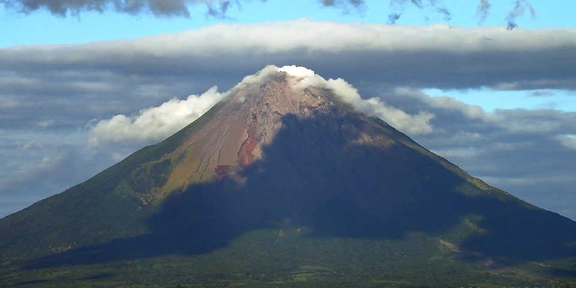

Central America & Caribbean
Nicaragua on a budget
Colonial cities, volcano adventures, a lake island and Caribbean beaches at Central America's lowest prices, with cheap hostels and street food.
Photo: Elemaki, CC BY 3.0, via Wikimedia Commons

Classic route
León, Granada, Ometepe, then fly to the Corn Islands. 2 to 3 weeks.
Before you go
Flights to Granada: Skyscanner · Kiwi.com · Google Flights
Hostels and guesthouses in Granada · León · Ometepe · San Juan del Sur
Tours and tickets: Granada · León
Mobile data: Nicaragua eSIM
Travel insurance: SafetyWing
How much 14 places in Nicaragua cost
Daily budgets per person in US dollars: a hostel dorm or simple guesthouse, local food, local transport and the usual entry fees.
-
Granada
A colorful colonial town, kayaking among the isletas of Lake Nicaragua and a night look at Masaya volcano's glowing lava.
Bed $10 · Food $8 · Getting around $3 · Extras $5
Budget tip: Chicken buses to Masaya cost under $1 and leave regularly from near the market.
$26per day -
León
Sled down the black slopes of Cerro Negro on a volcano boarding trip, then walk on the white roof of the cathedral.
Bed $10 · Food $8 · Getting around $3 · Extras $6
Budget tip: Book volcano boarding through a hostel. Fritanga street stalls serve cheap grilled dinners.
$27per day -
Ometepe
Twin volcanoes rise out of Lake Nicaragua on this island of beaches, farm stays and jungle waterfalls.
Bed $10 · Food $8 · Getting around $5 · Extras $5
Budget tip: Rent a scooter to get around. Climbing Concepción takes a full day and a guide.
$28per day -
San Juan del Sur
A lively surf town on a horseshoe bay, with daily shuttles to the breaks at Maderas and Remanso.
Bed $14 · Food $10 · Getting around $4 · Extras $5
Budget tip: Stay in town and ride the surf shuttle, which is much cheaper than a beachside hotel.
$33per day -
Matagalpa
Cool green hills dotted with coffee farms, misty cloud forest walks and a relaxed northern market town.
Bed $10 · Food $8 · Getting around $3 · Extras $4
Budget tip: Ask around town for cooperative coffee tours, which cost less than visits to the big estates.
$25per day -
Estelí
Northern highland town of cigar factories, street murals and nearby Tisey-Estanzuela reserve with waterfalls and stone carvings.
Bed $10 · Food $7 · Getting around $3 · Extras $5
Budget tip: Cigar factory tours can be booked through local hostels at fair prices; Miraflor reserve homestays include meals for a low daily rate.
$25per day -
Las Peñitas
Laid-back Pacific surf village near León with sunset-facing beaches and boat trips into the Isla Juan Venado mangrove reserve.
Bed $12 · Food $8 · Getting around $3 · Extras $4
Budget tip: Buses from León take around half an hour; arrange a Juan Venado boat with other guests to share the cost.
$27per day -
Laguna de Apoyo
Warm, clear volcanic crater lake ringed by forest, great for kayaking and floating between Granada and Masaya.
Bed $14 · Food $9 · Getting around $4 · Extras $3
Budget tip: Lakeside hostels sell day passes covering kayaks and dock use; shuttles from Granada are easiest since public buses stop at the rim.
$30per day -
Masaya
Handicraft market town beside Masaya Volcano, where night tours let you peer into a glowing crater of lava.
Bed $11 · Food $8 · Getting around $3 · Extras $8
Budget tip: Book a Masaya Volcano night tour from Granada to save on transport, and shop for hammocks in nearby Masaya market villages.
$30per day -
Somoto Canyon
Swim, float and cliff-jump through a narrow rock canyon carved by the river near the Honduran border.
Bed $10 · Food $8 · Getting around $3 · Extras $15
Budget tip: Book through the local guide cooperative and sleep in their family homestays to keep costs low.
$36per day -
Big Corn Island
Caribbean island with lobster dinners, Creole culture, clear reefs at Picnic Center Beach and the panga link to Little Corn.
Bed $16 · Food $11 · Getting around $5 · Extras $5
Budget tip: The La Costeña flight from Managua saves days; the cheaper alternative is a bus to El Rama and the slow boat, which runs only some days.
$37per day -
El Castillo
River village on the Río San Juan beneath a 17th-century Spanish fortress, with jungle boat rides to Indio Maíz reserve.
Bed $12 · Food $8 · Getting around $12 · Extras $6
Budget tip: Boats run from San Carlos on a fixed schedule, so check the days in advance; book Indio Maíz trips in town, not through outside agencies.
$38per day -
Popoyo
Consistent surf breaks, tide pools and a natural rock pool at Playa Guasacate on the quiet Pacific coast south of Managua.
Bed $16 · Food $10 · Getting around $6 · Extras $8
Budget tip: Stay in Guasacate for the cheapest rooms; board rentals and lessons are best value when booked for several days.
$40per day -
Little Corn Island
No cars, just reefs, palm-lined beaches and jungle paths on a tiny island off the Caribbean coast.
Bed $15 · Food $11 · Getting around $10 · Extras $6
Budget tip: Fly to Big Corn, then take the panga boat across. Bring cash, since ATMs are limited.
$42per day
Know before you go
Nicaragua on a budget: the basics
Currency
$1 = 36.84 NIO
Nicaraguan córdoba
| Dollars to NIO | NIO to dollars | ||
|---|---|---|---|
| $1 | 36.84 NIO | 10 NIO | $0.271 |
| $5 | 184 NIO | 50 NIO | $1.36 |
| $10 | 368 NIO | 100 NIO | $2.71 |
| $20 | 737 NIO | 500 NIO | $13.57 |
| $50 | 1,842 NIO | 1,000 NIO | $27.15 |
| $100 | 3,684 NIO | 5,000 NIO | $136 |
A typical day here (about $28) is roughly 1,000 NIO.
Mid-market rate on 2026-10-05. Cash machines and exchange desks pay a little less.
Getting around
Chicken buses and minivans are very cheap between León, Granada and the ferry port at San Jorge, and tourist shuttles cost more but save time. Ferries cross from San Jorge to Ometepe several times a day, and a scooter is a popular way to get around the island. Book the La Costeña flight to the Corn Islands ahead, since the small planes fill up.
Where to sleep
León and Granada have plenty of hostel dorms, Ometepe has cheap guesthouses and farm stays, and the Corn Islands have simple cabins.
What to eat
- Gallo pinto: rice and red beans fried together, eaten any time
- Vigorón: cassava topped with pork crackling and cabbage salad
- Nacatamal: large tamale with pork and rice wrapped in banana leaf
- Quesillo: soft cheese in a tortilla with pickled onion and cream
Money
Córdobas and US dollars are both widely used, but carry cash because cards are accepted mainly in larger hotels and restaurants. Restaurants often add a 10% service charge, and haggling is normal at markets.
Phone data
Claro and Tigo SIMs are cheap and easy to get with a passport, and coverage is decent in towns but patchy on Ometepe's far side and the Little Corn Island.
Heads up
Avoid photographing police, military or political events, and carry a copy of your passport.
Nicaragua travel: quick answers
How much does a day in Nicaragua cost on a budget?
About $28 a day for one person, from $25 in Matagalpa to $42 in Little Corn Island. That covers a hostel dorm or simple guesthouse, local food, local transport and the usual entry fees, so a week runs about $196 before flights.
When is the best time to visit Nicaragua?
December to April is the best time, with the most reliable weather for getting around.
What is the cheapest place to visit in Nicaragua?
Matagalpa, at about $25 a day. Cool green hills dotted with coffee farms, misty cloud forest walks and a relaxed northern market town.
How long do you need in Nicaragua?
León, Granada, Ometepe, then fly to the Corn Islands. 2 to 3 weeks.
How much is $1 in Nicaragua?
One US dollar is about 36.84 Nicaraguan córdoba (NIO), going by the mid-market rate on 2026-10-05. So $20 is roughly 737 NIO, and a typical budget day of $28 comes to about 1,000 NIO.
How do you get around Nicaragua cheaply?
Chicken buses and minivans are very cheap between León, Granada and the ferry port at San Jorge, and tourist shuttles cost more but save time. Ferries cross from San Jorge to Ometepe several times a day, and a scooter is a popular way to get around the island. Book the La Costeña flight to the Corn Islands ahead, since the small planes fill up.
What food should you try in Nicaragua?
Gallo pinto, rice and red beans fried together, eaten any time. Vigorón, cassava topped with pork crackling and cabbage salad. Nacatamal, large tamale with pork and rice wrapped in banana leaf. Quesillo, soft cheese in a tortilla with pickled onion and cream.
Planning around the seasons? See where to go in December, or compare the cheapest countries nearby.
Itineraries through Nicaragua
- Copan to Costa Rica 24 days · $1,862
Similar budgets nearby
- El Salvador $32/day
- Guatemala $33/day
- Dominican Republic $45/day
- Panama $46/day